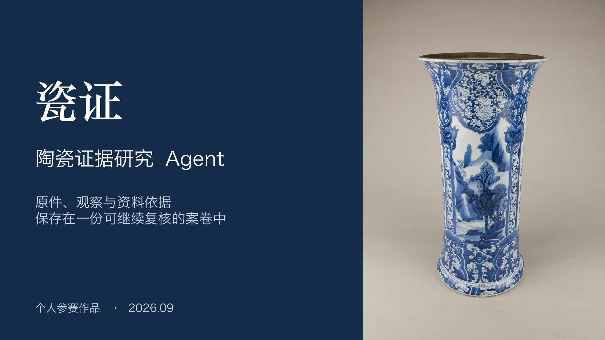
讲稿与来源
瓷证面向陶瓷研究材料的整理、补证和交接。AI负责观察与证据整理，专业人员负责复核。器物为公开已知身份教学材料，不代表项目完成了独立鉴定。
- 图像：The Metropolitan Museum of Art，18.61.4，Public Domain / CC0。 https://www.metmuseum.org/art/collection/search/48607
- https://github.com/dingyucanada/cizheng-agent-skills/blob/main/examples/public-demo/sources.json
- https://github.com/dingyucanada/cizheng-agent-skills/blob/main/docs/product-and-architecture.md
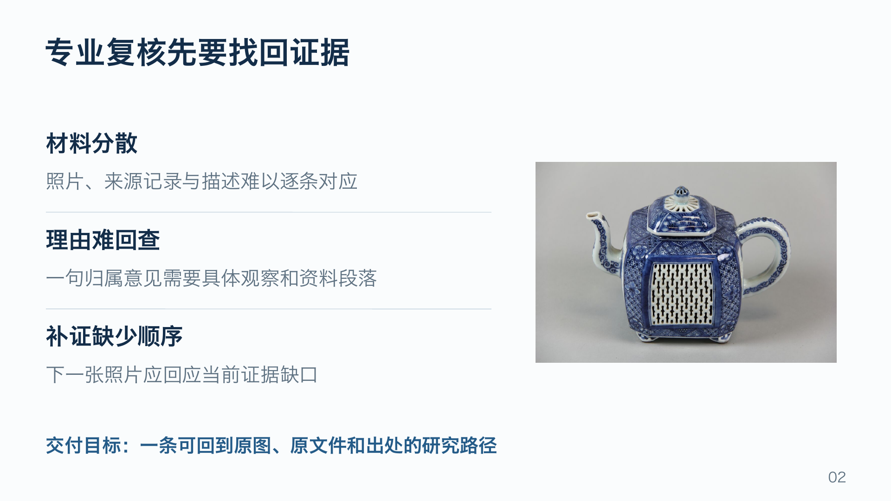
讲稿与来源
这里描述的是产品解决的工作问题，不是市场规模调查。收藏档案、博物馆编目和图录准备都需要把描述和依据对应。系统组织研究路径，不能凭照片替代实物检测。
- https://github.com/dingyucanada/cizheng-agent-skills/blob/main/docs/product-and-architecture.md
- https://github.com/dingyucanada/cizheng-agent-skills/blob/main/docs/professional-research.md
- 图像：The Metropolitan Museum of Art，79.2.1202a,b，Public Domain / CC0。 https://www.metmuseum.org/art/collection/search/51185
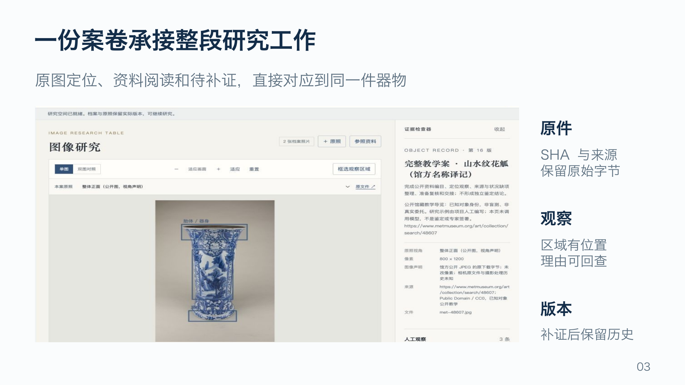
讲稿与来源
截图来自真实本地专业工作台的公开教学案。选区、图像操作、来源记录和离线交接可以在不调用模型时使用。截图中的馆方资料和人工教学观察不等同实际模型报告。原件、人工记录、固定资料版本、Agent运行和复核各有版本，材料更新后旧复核显示过期。
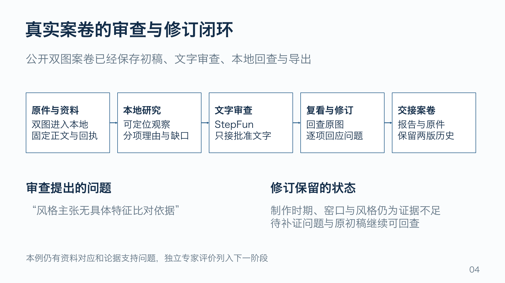
讲稿与来源
这页以真实保存记录说明业务链路。主视觉模型处理公开Met48607两图，StepFun step-3.7-flash只接批准的四字段文字包，没有原图或图像访问地址。两版NAT引用核查及JSON、Markdown、HTML导出有实际记录。专业问题仍待解决：初稿把同器Met18.61.4资料写为不适用本件，修订删除该句，时期与风格支持理由仍需专业复核，三项审查问题均保留未解决。流程完成不能作为鉴定准确率或Skills因果效果。
- https://github.com/dingyucanada/cizheng-agent-skills/blob/main/verification/nvidia/v07-workflows/round-12/workflow-summary.json
- https://github.com/dingyucanada/cizheng-agent-skills/blob/main/verification/nvidia/v07-workflows/round-12/quality-limitations-audit.json
- https://github.com/dingyucanada/cizheng-agent-skills/blob/main/verification/nvidia/v07-workflows/round-12/text-review/executed.json
- https://dingyucanada.github.io/cizheng-agent-skills/assets/cizheng-ai-replay-v07.mp4
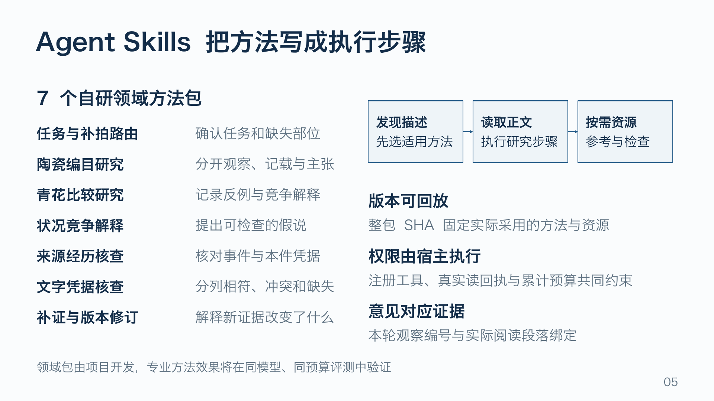
讲稿与来源
七包均为真实自研文件包，按description、SKILL正文与资源渐进加载，每包有适用范围和限制。整包SHA不是专家认可或NVIDIA Verified认证。宿主限制工具权限、实际读取与进入成功主动作的材料、累计模型和工具预算。真实运行还有可选协调器材料准备，协调器加载与模型自然触发分别记录；本页不把协调器行为当作Skills自然触发或专业提升。
- https://github.com/dingyucanada/cizheng-agent-skills/blob/main/skills/ceramic-route/SKILL.md
- https://github.com/dingyucanada/cizheng-agent-skills/blob/main/skills/ceramic-research-record/SKILL.md
- https://github.com/dingyucanada/cizheng-agent-skills/blob/main/skills/bluewhite-attribution-test/SKILL.md
- https://github.com/dingyucanada/cizheng-agent-skills/blob/main/skills/condition-hypothesis-test/SKILL.md
- https://github.com/dingyucanada/cizheng-agent-skills/blob/main/skills/provenance-evidence-audit/SKILL.md
- https://github.com/dingyucanada/cizheng-agent-skills/blob/main/skills/documentary-evidence-audit/SKILL.md
- https://github.com/dingyucanada/cizheng-agent-skills/blob/main/skills/evidence-revise/SKILL.md
- https://github.com/dingyucanada/cizheng-agent-skills/blob/main/cizheng/skill_runtime.py
- https://github.com/dingyucanada/cizheng-agent-skills/blob/main/docs/controlled-workflow.md
- NVIDIA Agent Skills平台参考： https://docs.nvidia.com/skills
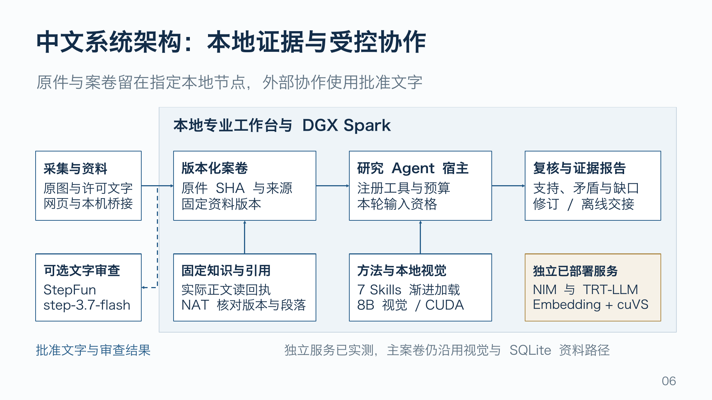
讲稿与来源
架构是原生可编辑对象与连接线。本地案卷使用SQLite保存原件、版本与回执，主视觉为Spark Qwen3-VL-8B。NAT经正式插件核查引用身份，不证明引用对专业结论的支持。StepFun只接明确批准的公开或脱敏文字。本轮NIM纯文本Qwen3-4B BF16为实际独立服务；TRT文字与官方Embedding+cuVS亦独立验收，主业务未自动切换。采集桥接是文件协议，不代表眼镜、手持仪器或桌面箱已完成厂商SDK与物理验收。
- https://github.com/dingyucanada/cizheng-agent-skills/blob/main/docs/product-and-architecture.md
- https://github.com/dingyucanada/cizheng-agent-skills/blob/main/docs/nvidia-integration.md
- https://github.com/dingyucanada/cizheng-agent-skills/blob/main/docs/nim-v09-update.md
- https://github.com/dingyucanada/cizheng-agent-skills/blob/main/docs/device-capture.md
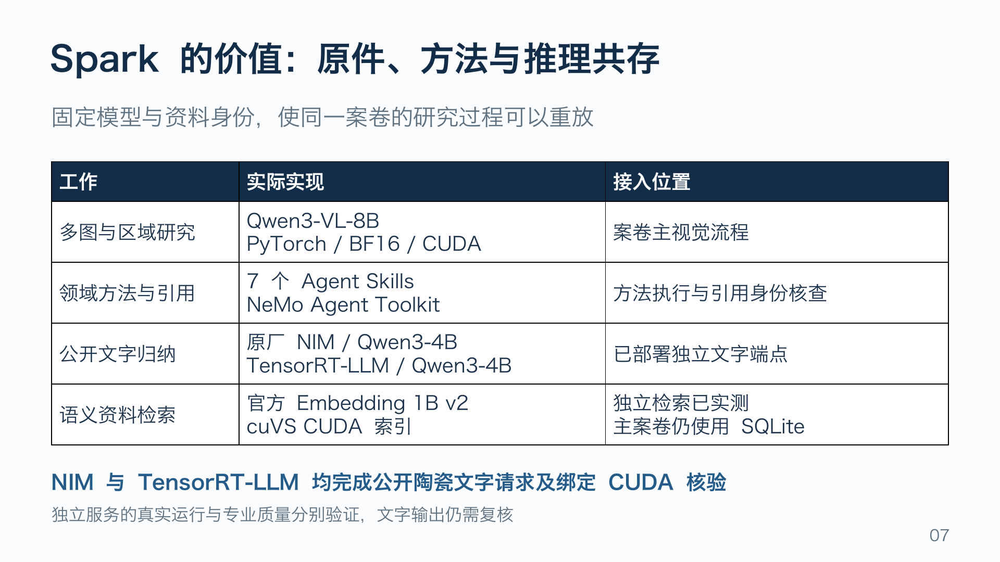
讲稿与来源
主视觉Qwen3-VL-8B服务、案卷后端与独立文字/检索服务在Spark共存，模型与文件身份固定。NIM为合法官方中国分发路线的原厂SGLang Model-Free NIM Spark，保留原NIM入口，纯文字Qwen3-4B BF16，2026-09-29一次公开陶瓷POST经原NIM接口成功，CUDA trace、同容器进程与原请求/响应SHA绑定，有限八步采样不覆盖全请求。NIM模型把馆方文字记载称为独立实物证据，且多给补证项，此表证明实际运行，不证明专业质量。TensorRT-LLM使用PyTorch backend，没有序列化TRT engine。Embedding为开放官方1B v2加cuVS，而非Embedding NIM或完整SDK。其真实中文查询核验身份和数值，不代表专家相关性。未比较整案速度，未将单次文字延迟推成业务加速。
- https://github.com/dingyucanada/cizheng-agent-skills/blob/main/docs/nim-v09-update.md
- https://github.com/dingyucanada/cizheng-agent-skills/blob/main/evidence/nim-v09/public-text-once/receipt.json
- https://github.com/dingyucanada/cizheng-agent-skills/blob/main/evidence/nim-v09/gpu-trace-summary.json
- https://github.com/dingyucanada/cizheng-agent-skills/blob/main/verification/nvidia/tensorrt-llm-v08/README.md
- https://github.com/dingyucanada/cizheng-agent-skills/blob/main/integrations/nvidia_retriever/README-open-service.md
- https://github.com/dingyucanada/cizheng-agent-skills/blob/main/docs/spark-validation.md
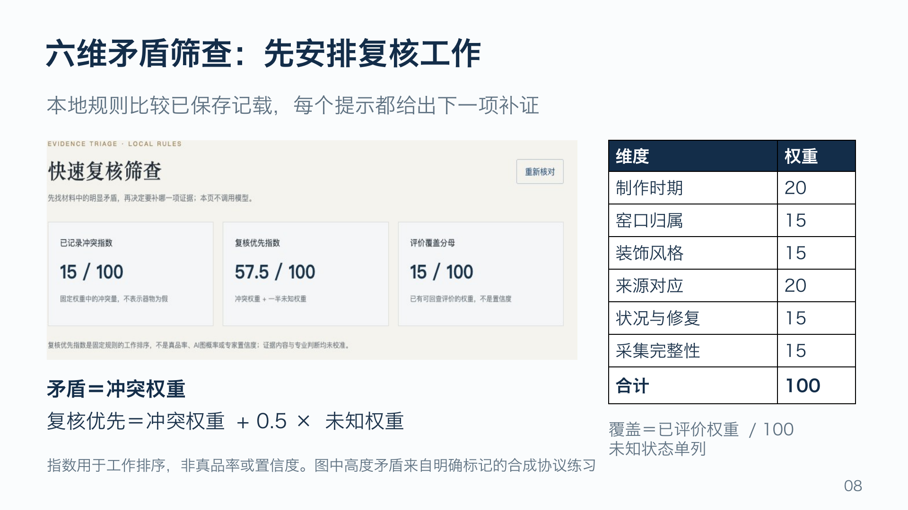
讲稿与来源
筛查是已实现的独立CPU规则功能，不调用视觉模型或StepFun。结构化记载绑定本件凭据SHA和定位，自动比较年份/高度区间、同编号体系的本件编号、来源事件先后。每维只计一次，固定总权重100。矛盾指数为冲突权重，所有未知时不可评价；复核优先为冲突权重加0.5倍未知权重；覆盖为已评价权重除100。截图只用于演示软件协议，两份300–301与350–351毫米高度是合成数字，不是馆藏实测或照片测量。权重与模型依据尚未完成专家标签校准。
- https://github.com/dingyucanada/cizheng-agent-skills/blob/main/docs/risk-triage.md
- https://github.com/dingyucanada/cizheng-agent-skills/blob/main/cizheng/risk_triage.py
- https://github.com/dingyucanada/cizheng-agent-skills/blob/main/site/assets/risk-workbench-v09.png
- https://dingyucanada.github.io/cizheng-agent-skills/triage.html
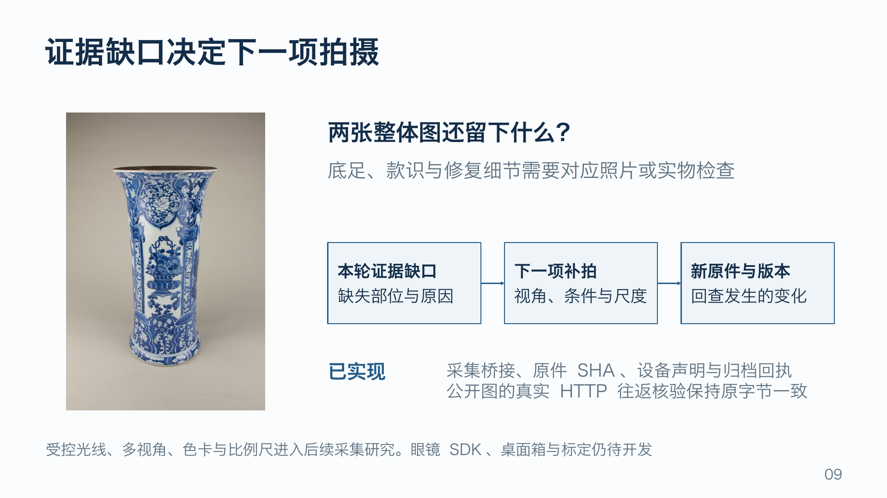
讲稿与来源
整体照片能支持部分可见形态，但不能补造底足、款识或修复细节。本页的拍摄循环是产品逻辑，也是可编辑流程。现已实现统一本机multipart会话协议、客户端、SHA校验、原始blob、设备声明、时间/单位与归档回执，并通过真实本机HTTP上传下载保持公共图片原字节SHA。设备身份、相机时钟和传感器尚未厂商认证或实物标定。智能眼镜、专业手持和桌面箱先导出文件到本机桥接；厂商SDK、直接拍摄控制和箱式硬件为未来研究，当前不具备材料检测或物理鉴定能力。
- https://github.com/dingyucanada/cizheng-agent-skills/blob/main/docs/device-capture.md
- https://github.com/dingyucanada/cizheng-agent-skills/blob/main/scripts/device-capture-client.py
- https://github.com/dingyucanada/cizheng-agent-skills/blob/main/docs/risk-triage.md
- 图像：The Metropolitan Museum of Art，18.61.4，Public Domain / CC0。 https://www.metmuseum.org/art/collection/search/48607
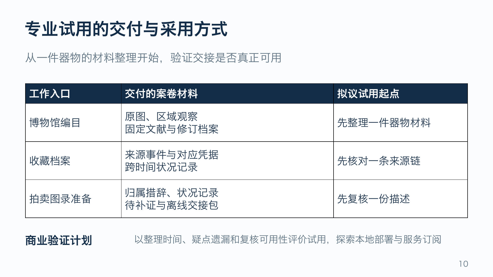
讲稿与来源
三种入口已经以公共教学案演示材料工作，不代表真实机构委托或合作。当前为个人作品和单人受控试用。拟议试用从小范围案卷材料整理开始，以材料整理时间、关键疑点遗漏、专家复核可用性评估产品价值。商业模式是后续探索，不虚构客户、收入、团队或已签合作。多用户权限、可信专家签署、合规审计与灾备仍需产品化。
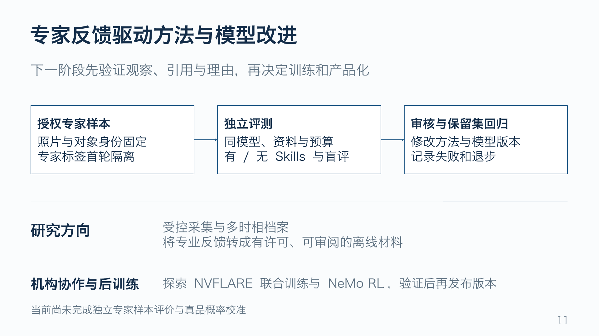
讲稿与来源
这是下一阶段研究路线，不是已取得的专家成绩。样本应取得授权并按器物分割，专家标签与首轮证据分开，避免同器照片泄漏到训练和测试两侧。专家分别评价图像观察、区域定位、资料引用、理由、补证和拒绝判断。固定模型、资料与预算后比较有/无Skills，保留失败并在独立保留样本上回归。NVFLARE联合训练与NeMo RL后训练是未来研究，没有联合训练网络、自动在线学习或专业准确率。
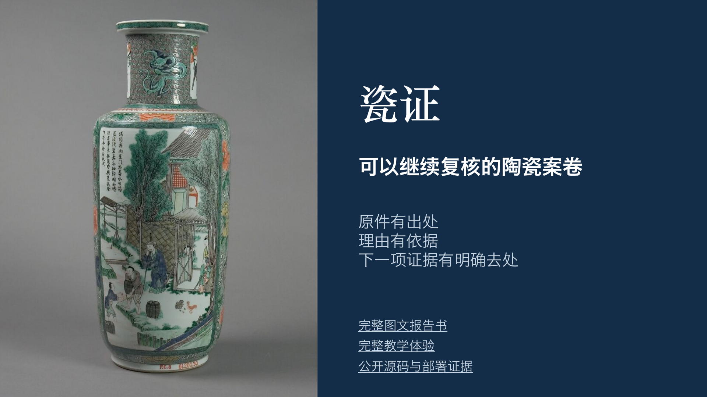
讲稿与来源
个人参赛作品。完整报告呈现产品、实际模型记录与部署证据。公开教学体验无需上传，不调用私有模型。公开仓库保留自研方法包、代码与脱敏部署记录。来源机构和NVIDIA不代表对本项目的背书或专业鉴定认证。
- https://dingyucanada.github.io/cizheng-agent-skills/report.html
- https://dingyucanada.github.io/cizheng-agent-skills/demo.html
- https://github.com/dingyucanada/cizheng-agent-skills
- 图像：The Metropolitan Museum of Art，61.200.30，Public Domain / CC0。 https://www.metmuseum.org/art/collection/search/50839